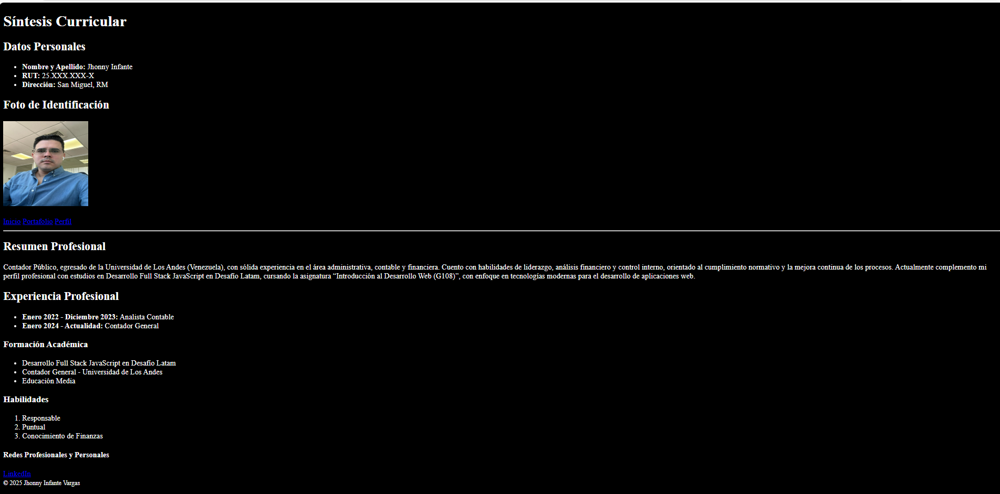
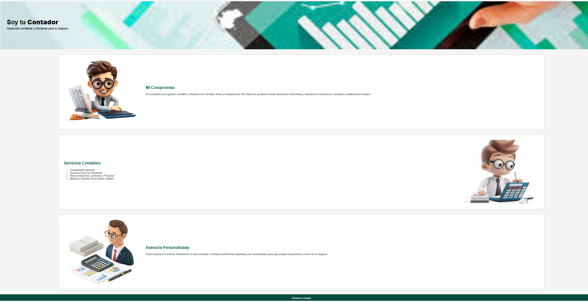
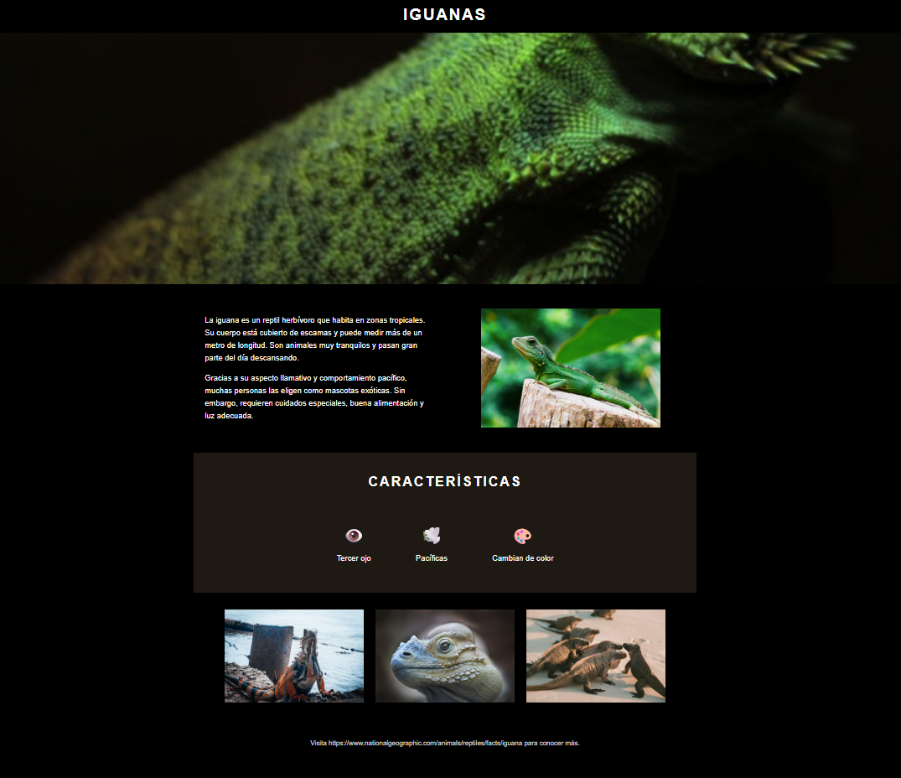

Currículum Vitae
Desarrollo de un CV en HTML y CSS aplicando estructura semántica, navegación entre páginas y organización clara del contenido.
Habilidades: HTML, CSS, semántica

Iguana Page
Página informativa donde se utilizó Flexbox para distribuir contenido, imágenes y secciones de forma ordenada y responsive.
Habilidades: Flexbox, layout, CSS

Cuppon
Maquetación con Bootstrap aplicando grillas, cards y formularios, logrando un diseño responsivo y consistente.
Habilidades: Bootstrap, responsive